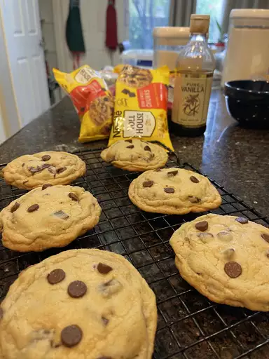

Original Nestle Toll House Chocolate Chip Cookies

Description
(copied from https://www.allrecipes.com/recipe/174864/original-nestle-toll-house-chocolate-chip-cookies/.)
This original Toll House cookie recipe from Nestlé evokes pleasant
childhood memories. Sweet, perfectly chewy, and hard to resist,
this famous American chocolate chip cookie is a treat no matter
what the age or occasion. Enjoy it with a glass of cold milk.
Cookies can be stored in the refrigerator for up to one week or in
the freezer for up to eight weeks.
Ingredients
- 2 ¼ cups all-purpose flour
- 1 teaspoon baking soda
- 1 teaspoon salt
- 1 cup butter, softened
- ¾ cup white sugar
- ¾ cup packed brown sugar
- 1 teaspoon vanilla extract
- 2 large eggs
- 2 cups semisweet chocolate chips (such as Nestlé Toll House)
- 1 cup chopped nuts
Steps
- Preheat the oven to 375 ℉ (190 ℃).
- Combine flour, baking soda and salt in small bowl.
- Beat butter, white sugar, brown sugar and vanilla in a large
mixing bowl until creamy. Add eggs, one at a time, beating well
after each addition. Gradually beat in flour mixture. Stir in
chocolate morsels and nuts.
- Drop by rounded tablespoon onto ungreased baking sheets.
- Bake in the preheated oven until golden brown, 9 to 11 minutes,
switching racks halfway through.
- Cool on the baking sheets for 2 minutes, then transfer to wire
racks to cool completely.
⌂ Odin Recipes